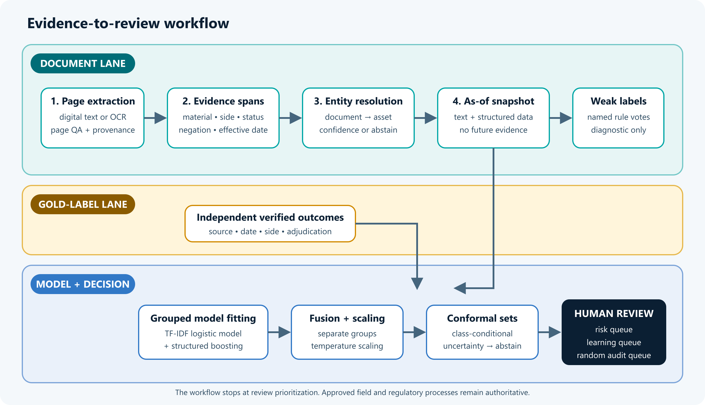
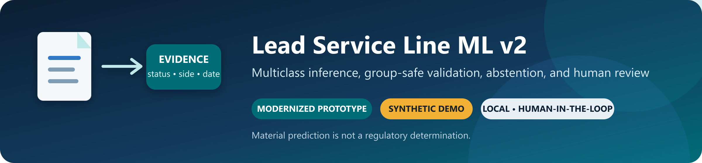
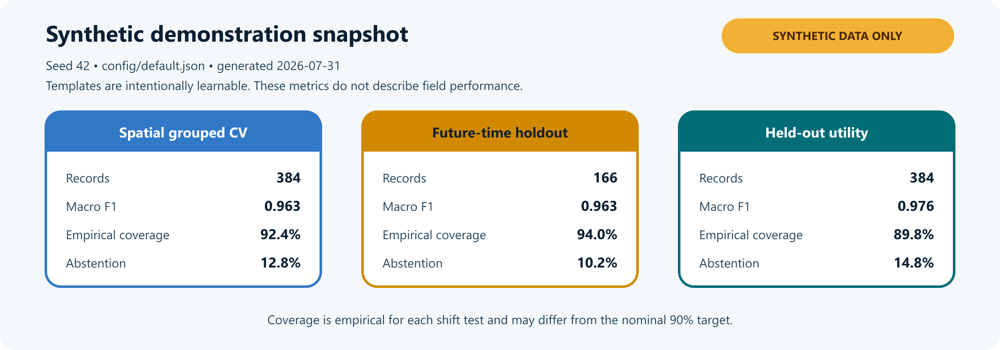

Lead pipe prediction prototype
A separate local ML prototype for material probabilities, uncertainty, and human review of service-line evidence.
Project gallery
Synthetic demonstration figures; these do not show field performance. 3 images. Select an image to view it full size.
{kind=link}

{kind=link}

{kind=link}

About this work
I developed a local prototype that separates document evidence from training labels, combines text and structured models, and produces distinct review queues.
The prototype implements an evidence-to-review workflow with model/data cards and auditable output artifacts. Its public case study describes the design without exposing source records or model bundles.
Methods and project context
- Python
- TF-IDF
- Logistic regression
- Gradient boosting
- Grouped evaluation
Document keywords can be useful evidence without being verified material labels. A review workflow also needs to account for conflicting records and uncertainty.
- Extract evidence with service side, status, negation, and year; keep weak rule votes separate from verified targets.
- Combine TF-IDF logistic regression with structured gradient boosting, then calibrate on separate held-out groups.
- Evaluate spatial, temporal, and cross-utility splits using synthetic data.
- Use prediction sets and quality gates to abstain when appropriate, with separate risk, learning, and random-audit queues.
Independent prototype · Synthetic demonstration data
This is a local synthetic-data prototype, not a deployed utility model or a regulatory decision system. It did not produce the historical $1M+ estimated savings. Entity resolution and snapshot construction are separate controls, not fully orchestrated by the training command.
This is a local synthetic-data prototype, not a deployed utility model or a regulatory decision system. It did not produce the historical $1M+ estimated savings. Entity resolution and snapshot construction are separate controls, not fully orchestrated by the training command.